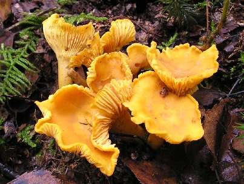
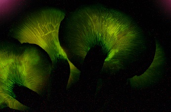
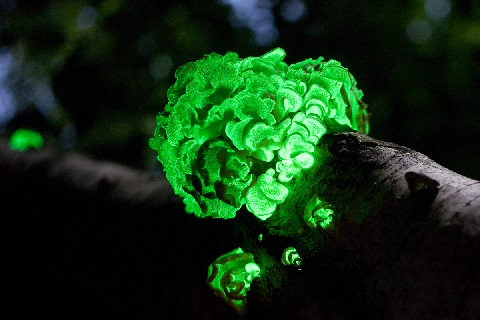

Chanterelle
Cantharellus cibarius, commonly known as the chanterelle, or girolle, is a fungus. It is probably the best known species of the genus Cantharellus, if not the entire family of Cantharellaceae. It is orange or yellow, meaty and funnel-shaped. On the lower surface, underneath the smooth cap, it has gill-like ridges that run almost all the way down its stipe, which tapers down seamlessly from the cap. It emits a fruity aroma, reminiscent of apricots and a mildly peppery taste (hence its German name, Pfifferling) and is considered an excellent edible mushroom.
Jack-O-Lantern

Omphalotus olearius, commonly known as the jack-o'-lantern mushroom, is a poisonous orange gilled mushroom that to an untrained eye appears similar to some chanterelles. It is notable for its bioluminescent properties.[citation needed] It is found in woodland areas in Europe, where it grows on decaying stumps, buried roots or at the base of hardwood trees. A similar, but phylogenetically distinct[2] species found in eastern North America is Omphalotus illudens.
Jack-O-Lantern
The jack-o'-lantern mushroom is orange. Its bioluminescence, a blue-green color, can be observed in fresh specimens in low light conditions once the eye becomes dark-adapted. The whole mushroom doesn't glow — only the gills do so. This is due to an enzyme called luciferase, acting upon a compound called luciferin, leading to the emission of light much as fireflies do when glowing
Panellus stipticus
Panellus stipticus, commonly known as the bitter oyster, the astringent panus, the luminescent panellus, or the stiptic fungus, is a species of fungus in the family Mycenaceae, and the type species of the genus Panellus. A common and widely distributed species, it is found in Asia, Australasia, Europe, and North America, where it grows in groups or dense overlapping clusters on the logs, stumps, and trunks of deciduous trees, especially beech, oak, and birch. During the development of the fruit bodies, the mushrooms start out as tiny white knobs, which, over a period of one to three months, develop into fan- or kidney-shaped caps that measure up to 3 cm (1.2 in) broad. The caps are orange-yellow to brownish, and attached to the decaying wood by short stubby stalks that are connected off-center or on the side of the caps. The fungus was given its current scientific name in 1879, but has been known by many names since French mycologist Jean Bulliard first described it as Agaricus stypticus in 1783. Molecular phylogenetic analysis revealed P. stipticus to have a close genetic relationship with members of the genus Mycena.